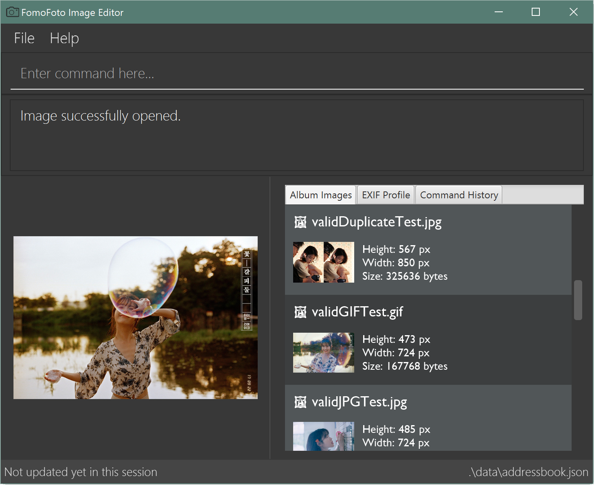

By: W14-2 Since: Feb 2019 Licence: MIT
- 1. Introduction
- 2. Quick Start
- 3. A Walk Through
- 4. Features
- 4.1. Black and White Filter :
bw - 4.2. Brightness:
brightness - 4.3. Contrast:
contrast - 4.4. Crop an image :
crop - 4.5. Exit the program :
exit - 4.6. Export edited image :
export - 4.7. Help view:
help - 4.8. Import an image :
import - 4.9. List Files:
listfiles - 4.10. Open an image :
open - 4.11. Redo edit steps :
redo - 4.12. Rotate an image :
rotate - 4.13. Save image :
save - 4.14. Undo edit steps :
undo
- 4.1. Black and White Filter :
- 5. Command Summary
1. Introduction
FomoFoto is a image processing software suite written in Java. This application is optimised for users who are familiar with the Command Line Interface (CLI), while providing a Graphical User Interface (GUI) for easy reference. For those who love the CLI, this is written for you! If you are not familiar, don’t worry, we’ll take you through and you’ll be a pro in no time! Who knows? You might even be editing your pictures faster than your friends who use Photoshop! Interested? Jump to the Section 2, “Quick Start” to get started. Enjoy!
2. Quick Start
-
Ensure you have Java version 9 or later installed in your Computer.
-
Download the latest FomoFoto.jar here.
-
Copy the file to the folder you want to use as the home folder for your FomoFoto application.
-
Double-click the file to start the app. The GUI should appear in a few seconds.
Figure 1. Home Page of FomoFoto -
And you have just started up FomoFoto on your device! You can refer to Section 4, “Features” for details of each command. If you would like a step-by-step walk through of our application, scroll down to the next section: A Walk Through.
3. A Walk Through
Let’s start on our image editing journey, shall we? In this walk through, we will be learning some simple commands to edit a sample image! Let’s get started!
-
Head over to this
linkover here to get a suggested sample image to start from. Alternatively, you can choose any image you have in your own device currently. -
Save the image in any desired folder you like on your device, like your Pictures folder for example. Name your image squirrel.jpg.
-
Start FomoFoto by referring to Section 2, “Quick Start”.
-
Open the folder that the image file is stored in. Then, to get the file path of the image:
-
In Windows: Hold on to the Shift key and right click on your image file. Click the option Copy path.
-
In Mac: {to be filled in}
-
-
You can now go back to the FomoFoto application. You would now want to import the image into FomoFoto. In the Command Line, type as follows:
 Figure 2. Import Command
Figure 2. Import Command -
Then, while keeping your cursor on the command line, paste the file path, by simultaneously pressing Ctrl and V keys.
-
In Windows: if you used the above method to copy the filepath, please remove the " and " signs on the two ends of the filepath.
-
-
Your final command should look something like this, with a different filepath:
Figure 3. Import with Filepath -
Then, you can press Enter to execute the import command. Tadah! Your image is now displayed on the FomoFoto application. Your screen should be similar to this.
 Figure 4. Import Success
Figure 4. Import Success -
Now let’s move on to other commands, shall we? Now suppose you want to decrease the brightness of the photo slightly, maybe 0.9 of the original brightness. So, you type the following command:
brightness 0.9 squirrel.jpg.Figure 5. Brightness Command -
Once you press Enter, FomoFoto will inform you that the filter has been applied successfully, like the image below:
 Figure 6. Brightness Success
Figure 6. Brightness Success -
Now, you seem to prefer to just have the cute squirrel instead of the humans behind. So, it makes sense that you want to crop the humans away. You can then make use of the crop command:
crop 310 250 140 200 squirrel.jpgto crop the humans away. After executing, your application would look something like this: Figure 7. Crop Success
Figure 7. Crop Success -
To save, simply use the save command:
save. Voila! You’re done!
{kind=link}
4. Features
Command Format
-
Words in
UPPER_CASEare the parameters to be supplied by the user e.g. inimport FILEPATH,FILEPATHis a parameter which can be used asimport desktop/photoalbum/image1. -
Items in square brackets are optional e.g
brightness [BRIGHTNESS_RATIO]can be used asbrightnees or as `brightness 0.9. -
Items with
… after them can be used multiple times including zero times e.g.[t/TAG]…can be used ast/friend,t/friend t/familyetc.
4.1. Black and White Filter : bw
Applies black and white filter on opened image.
Format: bw
4.2. Brightness: brightness
Adjusts the brightness of the image.
Format: brightness [BRIGHTNESS_RATIO]
Examples:
-
brightness 1.9 -
brightness(brightness ratio preset to 1.1)
4.3. Contrast: contrast
Adjusts the contrast of the image.
Format: contrast CONTRAST_RATIO
Examples:
-
contrast 1.4(increase contrast) -
contrast 0.3(reduce contrast) -
contrast(contrast ratio preset to 1.1)
4.4. Crop an image : crop
Crops an image based on given top left hand corner coordinates, width and height of final cropped image wanted.
Format: crop X_POINTCOORD Y_POINTCOORD WIDTH HEIGHT
Example:
-
crop 2 3 500 500
4.5. Exit the program : exit
Exits the program.
Format: exit
4.6. Export edited image : export
Exports the edited image into the specified filepath
Format: export FILEPATH
Example:
-
export desktop/editedphotoalbum
4.7. Help view: help
Displays help view to user.
Format: help
4.8. Import an image : import
Imports an image to assets folder from specified filepath
Format: import FILEPATH
Example:
-
import Users/Fomo/Pictures/sample.jpg
4.9. List Files: listfiles
Lists all files in assets folder.
Format: listfiles
4.10. Open an image : open
Opens an image inside assets folder for editing.
Format: open FILENAME
Example:
-
open sample.jpg
4.11. Redo edit steps : redo
Returns to a previously undone state.
Format: redo
|
Redoable commands: those commands that modify the image ( |
Examples:
-
rotate 180
brightness
undo(reverses thebrightnesscommand)
redo(runsbrightnessagain) -
contrast 0.3
crop 2 3 500 500
undo(reverses thecrop 2 3 500 500command
undo(reverses thecontrast 0.3)
redo(runscontrast 0.3command again)
redo(runscrop 2 3 500 500command again)
4.12. Rotate an image : rotate
Rotates the photo by a given degree provided by the user. Only 90, 180 or 270 degrees of rotation is allowed.
Format: rotate ANGLE
Example:
-
rotate 90
4.13. Save image : save
Apply and save your edits.
Format: save or save FILENAME
Example:
-
save MyNewImage.png
4.14. Undo edit steps : undo
Go back to the previous state of the image.
Format: undo
|
Undoable commands: those commands that modify the image ( |
Examples:
-
rotate 180
brightness 1.9
undo(reverses thebrightness 1.9command) -
contrast 0.3
crop 2 3 500 500
undo(reverses thecrop 2 3 500 500command
undo(reverses thecontrast 0.3)
5. Command Summary
-
Black/White
bw -
Brightness
brightness [BRIGHTNESS_RATIO]
e.g.brightness 0.8 -
Contrast
contrast [CONTRAST_RATIO]]
e.g.contrast 1.9 -
Crop
crop X_POINTCOORD Y_POINTCOORD W_WIDTH H_HEIGHT
e.g.crop 2 4 500 500 -
Exit
exit -
Export
export FILENAME
e.g.export MyNewImage.jpg -
Help
help -
Import
import FILEPATH
e.g.import Users/Fomo/Pictures/sample.jpg -
List Files
listfiles -
Open
open FILENAME
e.g.open sample.jpg -
Redo
redo -
Rotate
rotate ANGLE
e.g.rotate 270 -
Save
saveorsave FILENAME
e.g.save MyNewImage.png -
Undo
undo